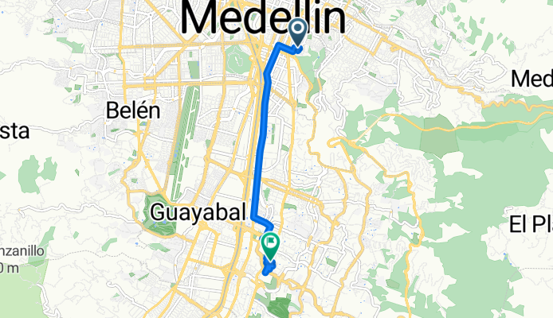
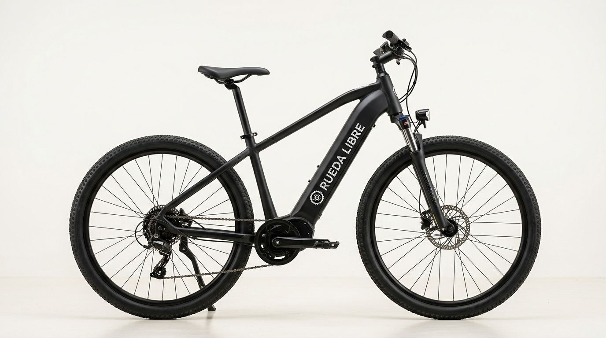

Rueda Libre
Bienvenido a Rueda Libre, tu mejor aliado para recorrer y descubrir Medellín sobre dos ruedas. Nos apasiona promover la movilidad sostenible, la aventura urbana y el turismo activo. Ya sea que busques una bicicleta para moverte por la ciudad, explorar sus parques y ciclorrutas, o unirte a un recorrido guiado, aquí encontrarás equipos de excelente calidad y la mejor atención para que tu experiencia sea inolvidable. ¡Súbete a la bici y siente la libertad de rodar con nosotros! Contactanos en el pie de página.
Alquiler de bicicletas
Ofrecemos una amplia gama de bicicletas para satisfacer tus necesidades, desde modelos urbanos para desplazarte por la ciudad hasta bicicletas de montaña para los aventureros que buscan explorar senderos y rutas naturales. Nuestro objetivo es brindarte una experiencia cómoda, segura y divertida mientras disfrutas de Medellín sobre dos ruedas.
Rutas guiadas
Únete a nuestras rutas guiadas y descubre Medellín de una manera única. Nuestros guías expertos te llevarán por los lugares más emblemáticos, compartiendo historias y secretos de la ciudad mientras pedaleas. Es una oportunidad perfecta para conocer la ciudad, hacer ejercicio y disfrutar del aire libre.

¿Quiénes somos?
Somos un equipo apasionado por la movilidad sostenible y el turismo activo. Nuestra misión es facilitar el acceso a la bicicleta como medio de transporte y recreación en Medellín, promoviendo así un estilo de vida más saludable y ecológico.
Servicios
- Alquiler de bicicletas urbanas: Disponemos de bicicletas cómodas y seguras para recorrer la ciudad a tu ritmo.
- Alquiler de bicicletas de montaña: Para los amantes de la aventura, ofrecemos bicicletas robustas para explorar senderos y rutas naturales.
- Rutas guiadas: Únete a nuestros recorridos guiados por Medellín y descubre sus secretos, historia y cultura mientras pedaleas.
- Asesoramiento y mantenimiento: Nuestro personal capacitado te brindará consejos sobre el uso seguro de la bicicleta y realizará mantenimiento básico para garantizar tu seguridad.
Pasos para alquilar
- Registro y solicitud: Regístrate en la plataforma o acércate al punto de atención para seleccionar el tipo de bicicleta y el tiempo de alquiler que necesitas.
- Verificación e identificación: Presenta tu documento de identidad y completa la validación del método de pago o depósito de garantía.
- Inspección y entrega: Revisa la bicicleta junto con el personal para verificar que los frenos, neumáticos y accesorios estén en óptimas condiciones antes de retirarla.
- Disfrute y devolución: Usa la bicicleta durante el periodo acordado y devuélvela en la estación o punto de entrega asignado.

Beneficios
- Movilidad sostenible y ecológica
- Fomento de la actividad física y la salud.
- Exploración de Medellín de una manera divertida y diferente.
Contacto
Si tienes alguna pregunta o deseas más información sobre nuestros servicios, no dudes en contactarnos:
- Teléfono: +57 123 456 7890
- Email: info@ruedalibre.com